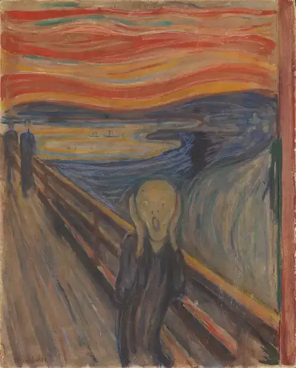
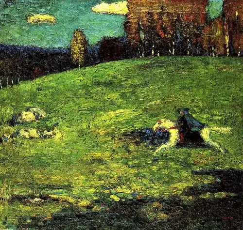
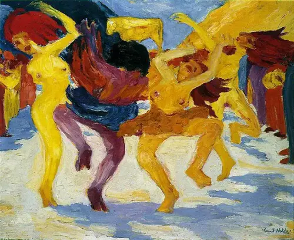
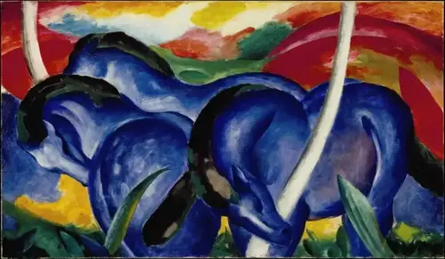

表现主义
表现主义是一种主要在20世纪初期的德国兴起的艺术和文化运动。这种风格强调对现实的主观表达，以揭示个人情感和内心世界。它常常通过夸张和扭曲的形象来表达焦虑和不安。
艺术家介绍
蒙地利亚尼
火热的灵魂：蒙地利亚尼 Amedeo Modigliani 1884 ~ 1920 Italian
意大利出生的画家和雕塑家，出生于莱戈恩，在佛罗伦斯和威尼斯学习艺术。 他以其优雅的线性作品闻名，灵敏的技巧和拉长的形式是他的绘画和雕塑的标志，他是一位杰出且放荡不拘的艺术家，作画的风格有如立体派。
蒙地利亚尼的一生宛如一颗光芒四射的慧星，一闪即逝。 随着时间的流逝，蒙地利亚尼的名字不但没有被世人遗忘，反而更加光彩夺目。 因为，在令人困惑的 20 世纪之初，他的艺术成功地履行了一个艺术家的使命，永远地诉说着存在于人类命运之中的灵魂的永恒哀愁。
马尔克
表现主义：马尔克 Franz Marc 1880 ~ 1916 Germany
他是20世纪初抽象艺术的催生者，其题材以动物为主角，尤其注重于骏马和群鹿，不幸的他却于36岁时死于一次大战，但之前，仍留下为数不少动人心怀的表现主义风格的画作。
马尔克的色彩具有特别的象征意义，他认为蓝色传达了男性的气概，坚强而充满活力; 黄色意味着女性的气质，宁静温和性感; 绿色表示这二者间的协调一致; 而红色则是沉重和暴力的象征。 这四种颜色在《蓝马》中有机地分布着，折射出他对世界精神实质的某种感悟和理解。
作品赏析
爱德华·蒙克 （Edvard Munch） 的呐喊 （1893）
《呐喊》是世界上最具标志性的现代艺术作品之一。它以体现早期现代主义时代弥漫的深刻焦虑和焦虑感而闻名。这幅画很大程度上是自传性的，因为它是基于蒙克在被他的两个朋友抛在身后后听到刺耳的“大自然的尖叫”的经历，他们出现在作品的背景中。这幅画有两个版本;一个位于奥斯陆的蒙克博物馆，另一个位于奥斯陆国家美术馆。
瓦西里·康定斯基的《蓝骑士》（1903）
《蓝骑士》是康定斯基在印象派和表现主义绘画风格之间转变的一个很好的例子。虽然它在技术和风格上有明显的印象派影响，但其厚重的粉彩、大胆的色彩和略显粗糙的笔触是早期表现主义的元素。这件作品的抽象性质也引起了观众的解释。有些人声称看到骑手怀里抱着一个婴儿。
埃米尔·诺尔德 （Emil Nolde） 的《围绕金牛犊跳舞》（1910）
《围着金牛犊跳舞》描绘了《出埃及记》中的一段话。根据旧约中的故事，当摩西登上西奈山时，以色列人制作了金牛犊来安抚人们，因为他们担心他可能不会回来。这幅画描绘了朴素的人们在偶像周围表演还愿舞蹈，却没有意识到它的虚假性。粗犷的笔触和鲜艳的色彩强调了作品的情感性。
弗朗茨·马克 （Franz Marc） 的《大蓝马》（1911 年）
1911 年，Der Blaue Reiter 首次展出了大蓝马。这件作品具有男子气概的明亮、对比鲜明的原色。中央马匹的蓝色和柔和的弧度形成了“和谐、和平与平衡的感觉”，与背景中山丘的鲜明红色相映成趣。马克表示，这种对比显示了宁静的灵性与暴力之间的并置，唤起了一种超越感。